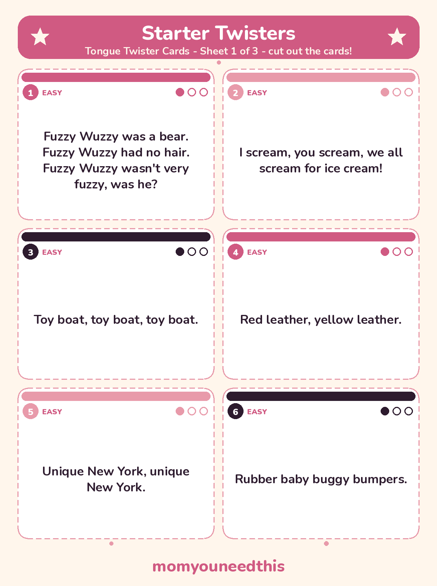
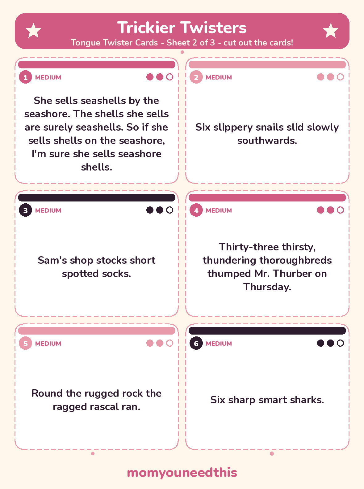
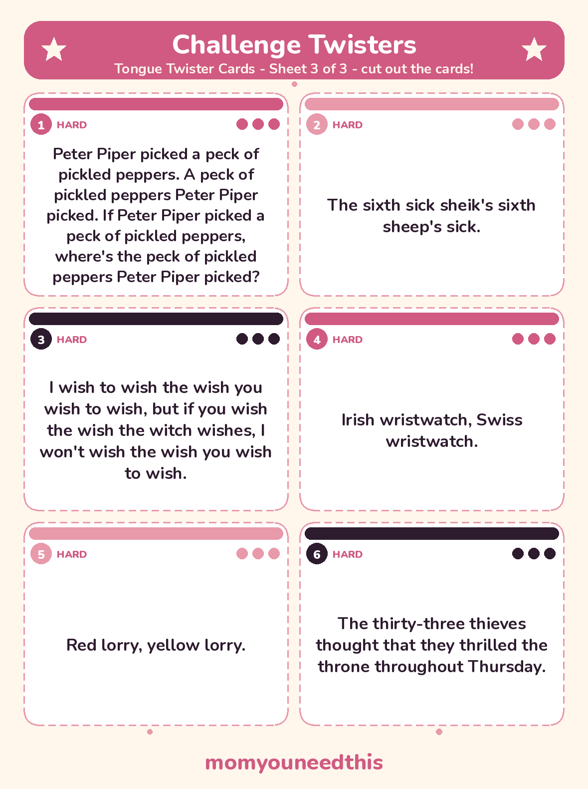

Tongue Twisters for Kids 43 Funny, Hard and Long Twisters to Say Slowly, Then Fast
Forty-three tongue twisters for kids, from short starter lines for ages 4 to 6 to the famous hard classics older kids love to race through. Funny, long, and sound-by-sound sets for S, TH and R practice, plus 18 of them as free printable cards. No signup, just say them.
Last updated: October 25, 2026
Quick Answer
These tongue twisters for kids start easy — short, silly lines a 4-year-old can copy — and build to difficult, long and sound-focused sets for S, TH and R practice. There are 43 twisters on the page, and 18 favourites are also on three free printable card sheets to cut out.
At a Glance
- Twisters: 43, in 6 groups
- Ages: 4 and up (starter set ages 4–6)
- Printables: 3 tongue twister card sheets (6 cards each, 18 twisters)
- Difficulty: Easy to hard — cards carry a 1–3 dot rating
- Sound practice: S, TH and R sets
- Cost: Free — print at home
😄 Funny Tongue Twisters to Start With
Short, silly and forgiving — start here with children ages 4 to 6. Say one slowly together, then let them try it solo. Getting it wrong is the funny part, and every one of these can be learned in a single sitting.
Fuzzy Wuzzy was a bear. Fuzzy Wuzzy had no hair. Fuzzy Wuzzy wasn't very fuzzy, was he?
I scream, you scream, we all scream for ice cream!
Toy boat, toy boat, toy boat.
Red leather, yellow leather.
Unique New York, unique New York.
Rubber baby buggy bumpers.
A big black bug bit a big black bear.
Double bubble gum, bubbles double.
Mixed biscuits, mixed biscuits.
She sees cheese.
😬 Difficult Tongue Twisters — The Famous Hard Ones
These are the hard tongue twisters english-speaking kids and grown-ups trip over most — short lines that punish speed. Master them slowly first; the race comes later.
The sixth sick sheik's sixth sheep's sick.
Six thick thistle sticks. Six thick thistles stick.
I wish to wish the wish you wish to wish, but if you wish the wish the witch wishes, I won't wish the wish you wish to wish.
Irish wristwatch, Swiss wristwatch.
Sheena leads, Sheila needs.
Six Czech cricket critics.
Six sticky skeletons.
If two witches were watching two watches, which witch would watch which watch?
📜 Long Tongue Twisters — The Multi-Line Classics
These are stories in miniature — each one takes a breath or two and rewards a child who can hold the whole thing in their head. Learn them a line at a time, then stitch the lines together.
Peter Piper picked a peck of pickled peppers.
A peck of pickled peppers Peter Piper picked.
If Peter Piper picked a peck of pickled peppers,
where's the peck of pickled peppers Peter Piper picked?
Betty Botter bought some butter,
But, she said, the butter's bitter;
If I put it in my batter,
It will make my batter bitter,
But a bit of better butter
Will make my batter better.
So she bought a bit of butter
Better than her bitter butter,
And she put it in her batter,
And the batter was not bitter.
So 'twas better Betty Botter
Bought a bit of better butter.
How much wood would a woodchuck chuck if a woodchuck could chuck wood? He would chuck, he would, as much as he could, and chuck as much wood as a woodchuck would if a woodchuck could chuck wood.
A flea and a fly flew up in a flue. Said the flea, “Let us fly!” Said the fly, “Let us flee!” So they flew through a flaw in the flue.
Silly Sally swiftly shooed seven silly sheep. The seven silly sheep Silly Sally shooed shilly-shallied south. These sheep shouldn't sleep in a shack; sheep should sleep in a shed.
I thought a thought. But the thought I thought wasn't the thought I thought I thought. If the thought I thought I thought had been the thought I thought, I wouldn't have thought so much.
🐍 Tongue Twisters with S Sounds
The S and SH sounds sit close together, which is what makes this set such a good game: slow down and the sounds sort themselves out, speed up and the seashells win. Play it as sound practice — listen together for which words hiss and which ones shush.
She sells seashells by the seashore. The shells she sells are surely seashells. So if she sells shells on the seashore, I'm sure she sells seashore shells.
Six slippery snails slid slowly southwards.
Sam's shop stocks short spotted socks.
Six sharp smart sharks.
The sun shines on the shop signs.
Scissors sizzle, thistles sizzle.
Susie works in a shoeshine shop. Where she shines she sits, and where she sits she shines.
👅 TH Tongue Twisters — Two Sounds, One Spelling
These th sound tongue twisters mix the two TH sounds — the soft one in thumb and the buzzing one in this. Treat them as a listening game first: can your child hear which TH each word starts with?
Thirty-three thirsty, thundering thoroughbreds thumped Mr. Thurber on Thursday.
The thirty-three thieves thought that they thrilled the throne throughout Thursday.
Thirty-three thousand people think that Thursday is their thirtieth birthday.
There those thousand thinkers were thinking how did the other three thieves go through.
He threw three free throws.
Thirty-three thousand feathers on a thrush's throat.
🌀 R Tongue Twisters — Rolling and Tricky Rs
R is one of the last sounds many children settle into, so keep this set light and playful. Rolling, growling attempts count as playing the game properly — the point is hearing the R in every word and having a go at it.
Round the rugged rock the ragged rascal ran.
Rory the warrior and Roger the worrier were reared wrongly in a rural brewery.
Red lorry, yellow lorry.
The great Greek grape growers grow great Greek grapes.
Truly rural, truly rural, truly rural.
Rhys watched Ross switch his Irish wristwatch for a Swiss wristwatch.
✂️ The Printable Tongue Twister Cards
Eighteen favourites from this page are also cards — six per sheet, from starter twisters through trickier ones to the full challenge set. Every card is marked EASY, MEDIUM or HARD with a dot rating: one filled dot is a starter, two is trickier, three is the challenge level. Print the sheets, cut along the dashed lines, and deal a card whenever a car ride, a queue or a rainy afternoon needs one.

✂️ Download Your Free Tongue Twister Cards — Sheet 1
6 tongue twisters on cut-out cards — starter twisters, sheet 1 of 3.
⬇️ Download Free Tongue Twister Cards 🖨️ Print🎁 Free printable for ages 4 and up

✂️ Download Your Free Tongue Twister Cards — Sheet 2
6 tongue twisters on cut-out cards — trickier twisters, sheet 2 of 3.
⬇️ Download Free Tongue Twister Cards 🖨️ Print🎁 Free printable for ages 4 and up

✂️ Download Your Free Tongue Twister Cards — Sheet 3
6 tongue twisters on cut-out cards — challenge twisters, sheet 3 of 3.
⬇️ Download Free Tongue Twister Cards 🖨️ Print🎁 Free printable for ages 4 and up
🌱 Why Tongue Twisters Are Worth the Giggles
Tongue twisters for kids work because the stakes are tiny and the feedback is instant: you hear the moment a sound lands, and you hear the moment it slides — usually because everyone is laughing. Along the way children practise listening closely, remembering a line in order, and speaking out loud in front of other people, all inside a game that takes thirty seconds.
🖨️ How to Use These Tongue Twisters
- Start painfully slow. Say the twister word by word, with big, exaggerated mouth movements, and let your child copy you. Slow and clear beats fast and muddled every time.
- Tap the rhythm. Tap your knees or clap softly, one beat per word. A steady beat holds the line together and gives wobbling words somewhere to land.
- Whisper it, shout it, silly it. Say the same twister in a whisper, then in a big outdoor voice, then in robot, squeaky and sleepy voices. Same words, brand-new game — and nobody notices it was practice.
- Speed up one notch at a time. Only go faster once the slow version comes out clean twice in a row. When it falls apart, drop back a notch and build up again.
- Deal a card. Use the printable cards: pick one at random, and three clean tries in a row moves you up to the next dot level.
🤣 More Fun for Moms & Kids
🧩 Riddles for Kids
Short, funny riddles with the answers hidden until your child has had a good guess. Try the riddles.
🤔 Would You Rather Questions
Silly either-or questions that start the best family arguments — the friendly kind. Pick a question.
🎄 Christmas Jokes for Kids
Clean Christmas jokes about Santa, reindeer and snowmen, with printable joke cards too. Read the Christmas jokes.
📚 Learning Activities
The full hub of free printable activities for toddlers and preschoolers. Browse activities.
❓ Tongue Twisters for Kids FAQ
What age are tongue twisters for kids best for?
The starter set on this page suits ages 4 to 6 — the lines are short and silly enough to copy after one hearing. Older children, roughly 7 and up, usually prefer the difficult and long sets, where finishing without a slip feels like winning. A 3-year-old can still join in by copying a single line like Toy boat with you.
How do I teach my child a tongue twister without it turning frustrating?
Start much slower than feels natural, one word at a time, and treat every slip as the joke rather than a mistake. Learn one line, add the next, and stop while it is still funny — a twister a child asks for again tomorrow is worth more than ten drilled today. The steps in the How to Use section above walk through the slow-to-fast routine.
Can tongue twisters help my child practise speech sounds?
Many parents and teachers use tongue twisters as a playful way to practise saying particular sounds clearly, and the S, TH and R sets on this page are grouped for exactly that game. They are a game, not a treatment, and they come with no promise about any individual child's speech. If you have concerns about your child's speech, a teacher or a speech and language professional is the right person to ask.
Which tongue twister is the hardest?
The sixth sick sheik's sixth sheep's sick is the one most often named as the hardest — it is very short and still trips almost everyone. The wish twister and Six thick thistle sticks, both in the difficult set above, run it close. Hard is personal, though: whichever one your child cannot yet say is the hardest one in your house.
Can I print the tongue twisters?
Yes — 18 favourites from this page are on three printable card sheets, free to print at home with no signup. Each card carries a difficulty rating of one, two or three dots, and the sheets have dashed cut lines so the cards can live in a pocket, a car or a classroom drawer.